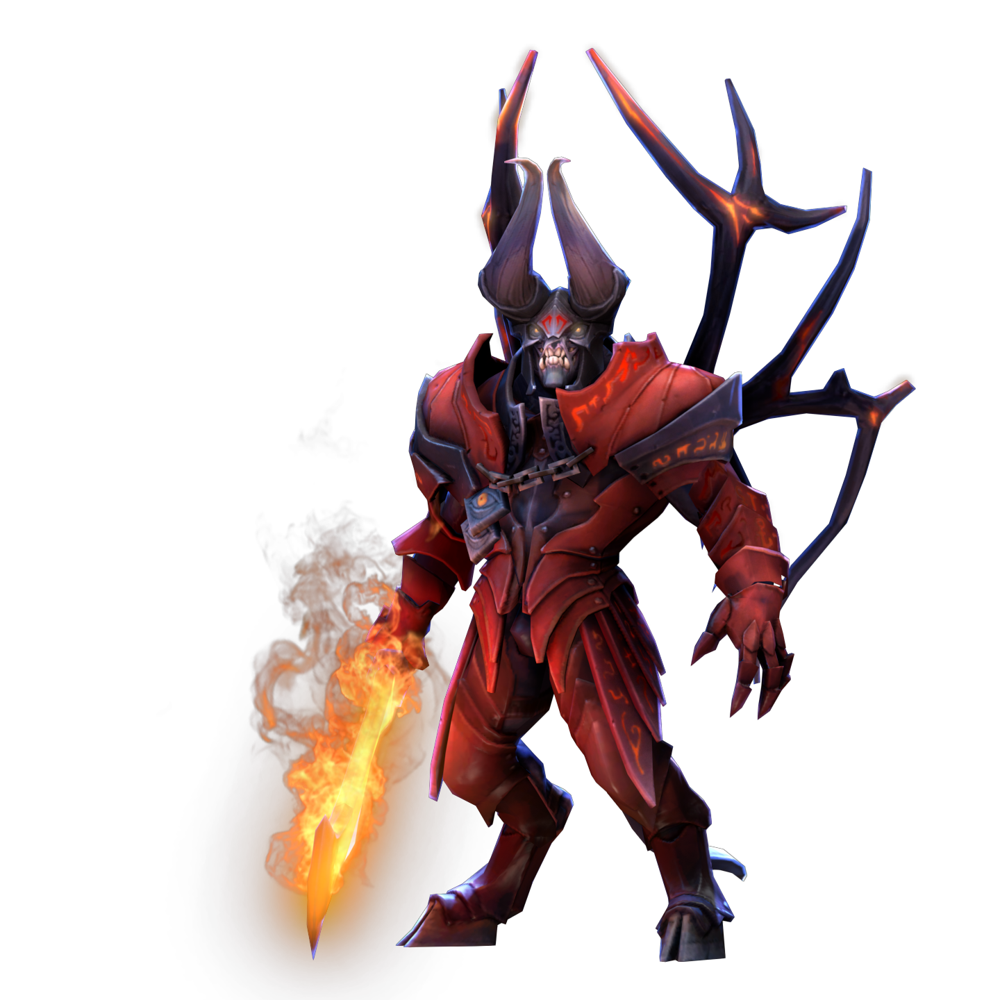
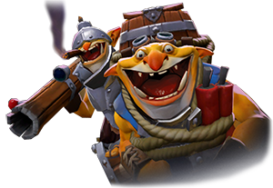
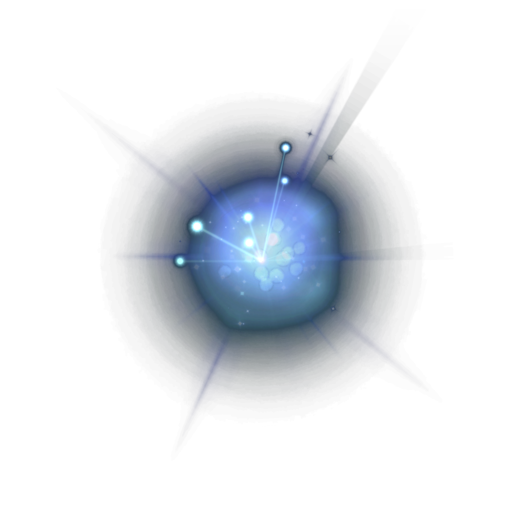

23 ДЕКАБРЯ 2022
Обновление Dota 2 — 22 декабря 2022 года

-
Исправлена ошибка, из-за которой герои под действием Doom могли с помощью очереди команд применять мгновенные заклинания (например, Avatar у Black King Bar) при выходе из изгнания (например, от способностей Astral Imprisonment или Disruption).

-
Исправлена ошибка, из-за которой бомба Sticky Bomb у Techies застревала и не взрывалась, если цель успевала телепортироваться от неё.
Читать больше о исправленый ошибках...
10 ДЕКАБРЯ 2022
Обновление Dota 2 — 12 сентября 2022 года

-
Исправлена ошибка, из-за которой Hoodwink Decoy не использовала Sharpshooter из-за нехватки маны.

-
Исправлена ошибка, из-за которой скорость передвижения привязанного Ио могла опускаться ниже минимальной.
Читать больше о исправленый ошибках...